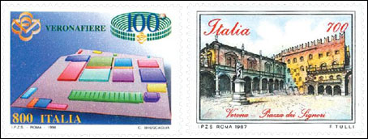
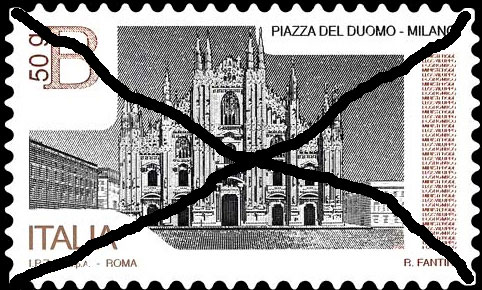
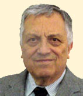
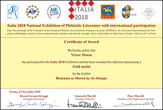
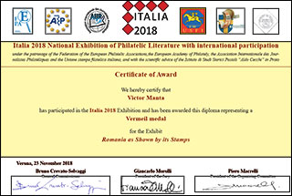

Italia2018 - Websites Competition
← Back to Websites Competitions
Websites Competition at the Exhibition of Philatelic Literature in Italy
Twenty years after the first FIP evaluation of philatelic websites
Victor Manta, PWO
Introduction - Websites Competitions Reminder (1999 - 2014)
The author of this article participated in almost all mentioned competitions, this being the reason why their unique, largely forgotten history and fate is preserved on the Philatelic Webmasters Organization's (PWO) website.
The four FIP Evaluations (1999 - 2003). Here is the place to remember two decisive conclusions of the organizers of the first website competitions, offered by the International Philatelic Federation (FIP):
- It would be a mistake to attempt to evaluate Internet literature against exactly the same benchmarks as printed literature. Charles J. Peterson, the regrettable President of the FIP philatelic literature commission, who started in 1999 what was announced as an annual evaluation of philatelic sites.
- With regards to websites, I made the ruling that they could not be judged at an international exhibition. This decision comes from the later celebrated Mr. Francis Kiddle, the former Chairman of the FIP Literature Commission. Source.
This decision put a sad end, for the ten following years, to the international website competitions! Source.
IPHLA 2012 was the first major website competition after the defunct FIP ones. It had the commendable intention to bring a new breath to the long-awaited competitions but succeeded only partially. The reason is that it tried again to evaluate the websites by using the same criteria as for the printed literature and by the same judges. See a PWO analysis of IPHLA 2012 here.
ROSSICA 2014, carried out under the patronage of AIJP (International Philatelic Journalists Association), is remembered as using a weird mixture of incompatible and inadequate rules, and a jury of its own. The results were the ones to be expected. Source.
WEBSITES COMPETITION AT ITALIA 2018
Presentation
The Philatelic Literature Exhibition Italia 2018 was a specialized national exhibition with international participation, organized by the Federazione fra le Società Filateliche Italiane (FSFI) under the patronage of the Federation of the European Philatelic Associations (FEPA).

The First Shock - a long DELAY
The exhibition took place between 23 - 25 November 2018 in Verona , one year after it was initially planned. It should have taken place in Milan but was moved to Verona for reasons that were never disclosed.

There were no excuses presented by the organizers for the unusually large delay, and NO intention, announced on the website, to refund the many participants who paid much too early for their finally delayed participation. This can be considered as a lack of respect of organizers for the numerous participants.
Meanwhile, on the exhibition site, even if 2017 copyrights appear very often on it, the delay became invisible, being thoroughly swept under the rug.
Participation Fees and Required Affiliations
The participation fee of Euro 40.00 (about US$ 49) was the highest so far for the website competitions. I can only hope that this is not a future trend.
On the positive side, the payment of participation fees by via PayPal was an obvious advantage for the participants, as well as the acceptance by the organizers of philatelic websites from all webmasters worldwide, independently of their affiliations (if any). This idea was started by IPHLA 2012 and it should be continued.
The Philatelic Literature Exhibition's Website
The exhibition's website was the main (or rather the only) communication method used by the organizers, and for this reason it is worth considering. The address of the Italia 2018 website is here.
For a website that hosted, among others, an international websites competition, it is a rather Spartan one (an understatement).
For example on the page called Images one can read, even now in 2019, that: First pictures will be online on 20 July 2018. It is not obvious to what images this page refers, the page itself being anyway empty!
Also regarding the images on this site, following the link "Websites" on the page that lists the websites competition participants and their sites, of 34 sites listed only for 3 (!) of them the images of their entry pages are shown, all others displaying instead the deceptive message : Picture temporarily unavailable.
By the way, on this Participants page the site Cif Unificato srl , that characterizes itself as an E-commerce website, should not be overlooked
The Special Regulations
Article 1: Competitive Exhibits
In accordance with art. 1.4 of the General Regulations of the FIP for the Evaluation of Competitive Exhibits at FIP Exhibitions (GREV), these Special Regulations have been developed to supplement those principles with regard to Philatelic Literature. Source.The application of these General Regulations to the evaluation of the philatelic websites was one of the main problems, ones that were often addressed in the past on the PWO's website.
A first remark is that the indiscriminate usage of these Regulations contradicts the old findings of Mr. Peterson (see above reference): It would be a mistake to attempt to evaluate Internet literature against exactly the same benchmarks as printed literature. He came to this conclusion after having studied hundreds of philatelic websites, but his warning was largely forgotten by all organizers of websites competitions that followed, including by those of Italia 2018. An excerpt from the Regulations illustrates this:
5.2 For Literature exhibits, the following relative terms are presented to lead the Jury to a balanced evaluation (ref. GREV. art. 5.2):
(Relative evaluation terms)
Printed
Digital
Treatment of contents
40
40
Originality, significance and depth of content
40
40
Technical matters
15
15
Presentation
5
5
Total
100
100
Please note that the columns Printed and Digital are identical, which is an early indication of the same approach, considering also that in fact the same judges evaluated all philatelic literature categories.
To better understand how the above points were allotted, I asked by e-mail the President of the jury, Mr. Giancarlo Morolli (Italy) and the member of the jury Mr. Bruno Crevato-Selvaggi how was it possible that webmasters who treat for 15 - 20 years the same subject on their multipage websites, and who are presumably among the best connoisseurs of the subjects they deal with, have lost about 15 - 20 points at the Treatment of context and in Originality, significance, and depth of contents . I'm convinced that these webmasters know much more about the subject that they treated than any possible members of the jury, an attitude can be interpreted as a sign of arrogance on their part.
Neither of the jury members mentioned above felt compelled to answer my question, this being the reason why I finally gave up the idea of an interview with Mr. Crevato-Selvaggi, after being rejected by Mr. Morolli (see below).
Please note in passing the notion of relative terms used in art. 5.2, instead of one that should give a precise indication to the jurors
I also asked both jury members about how was implemented the new criterion from the Regulations that refers to the evaluation of the exhibits: "4.4 The criterion "technical matters" requires an evaluation of such aspects as: For digital publications: user interface, search / navigation speed, usability, frequency of update (where pertinent)" . Source.
Mr. Morolli addressed this question by following comments:
( ) I was the author of the sentence you quote ( ). Personally I visited most sites different times using both my PC and my tablet, with three different browsers (Opera, Chrome, and Firefox). Other jurors used Safari or Explorer.
These are less relevant judging attempts because the browsers' compatibility is not mentioned among the new Regulation criteria, being one that with today's tools is easily achieved and is relatively rarely embarrassing for the users
I am really committed to supplement the FEPA Regulations, which resulted out of my effort as leader of a team of experts, with clear and effective guidelines, In this respect I hope that, when I will have reached a satisfactory draft for the FEPA guidelines concerning websites, I could rely on your remarks on the same.
As I understand the self-boasting Mr. Morolli, the Regulations are a work in progress under his guidance, and he will rely on my remarks, the ones that I wasn't given the opportunity to express. My intention was to ask him some obvious questions, but the jury's president explained to me that he is too busy to answer them (see also below).
I finally mention that neither FIP earlier, nor FEPA or AIJP later ever asked the PWO members to share with them their observations, wishes or complaints, even since we offered to share our experience from the very beginning of philatelic websites competitions. Later we gave up and the result is that we speak about the same things now, we talked about already in the years 1999 - 2003
THE JURY
Qualification
Excerpt from the Regulations:
9. Composition of the Jury Literature jurors must have a reading ability in at least two languages, one of which must be any of the four official FIP languages (art. 29.3 of the Statutes). Furthermore, at least one of the jurors should have a high level of IT skills.
Looking at the list of jurors I could not identify some of them who had participated in earlier websites competition. Of course, I could be wrong but publishing information about their qualification for judging the philatelic websites would have been helpful and reassuring.
Because these competitions are so rare, I doubt that the Italia 2018 websites competition jurors accumulated enough significant experience in the field. The high level of IT skills required by Regulations is not relevant in our context of the deep knowledge of the subjects and the necessity of having a true philatelic webmaster heart.
For this reason, their unexplained and uncommented awards deserve to be treated with a considerable dose of skepticism and doubt.
Communication
By the end of November 2018, after the exhibition, I asked Mr. Morolli (the President of the Jury) for an interview, for publication on the PWO site. I was especially interested to learn how can the jury of Italia 2018 help the participating webmasters to improve their sites. Here is his answer (Nov. 27, by e-mail), quoted almost in full:
As far as your request are concerned I regret not being available to correspond, at least in the next months. From one side my workload as organizer and jury president (we started judging well in advance) compelled me to put aside a number of personal and professional tasks and now I must take care of them. For instance, yesterday morning I had a medical check-up that should have taken place early September.
Furthermore, in Verona I committed with the FEPA President to put promptly on paper what we learnt while judging, so I will be dealing with the preparation of the new guidelines for the evaluation of philatelic literature with particular focus on the digital entries and the websites.
In my almost 50 years as FIP juror I have always worked on the feedback to the exhibitors, but at present I must concentrate on regaining control of my priorities.

Mr. Morolli, the Jury's President who couldn't find time for an interview with the PWO, an organization that represents so many philatelic webmasters, deserves anyway to be largely known, this being the reason why we publish his allegations and his portrait. Picture's open source - the Jury page of Italy 2018.
It is also instructive to learn that he/they learnt while judging, when an opposite approach seems to be the appropriate one (first learn, then judge, otherwise it confirms the old joke that says that who knows is the one who does the things, and who doesn't know is teaching others - by judging them!).
My results
Because I know a bit more about the results of my own site and because I'm authorized to freely talk about them, please see below the results of my site Romania as Shown by Its Stamps", with which I participated in the Italia 2018 websites competition. Just to mention that many of its newer articles were also published in printed philatelic magazines from Romania and USA.


Due to a calculation error (that I immediately reported to the jury after I received - late, late! - the breakdown of my evaluation), I received successively from the organizers two digital certificates, the first as a Gold medal and the second as a Vermeil medal . Such a misplaced error could be easily avoided if a commonplace Excel-type spreadsheet, with automatic calculations was used, instead of a dumb table, prone to evaluator's calculation errors.
Considerations and conclusions after 20 years of websites Evaluations
Fortunately, the philatelic webmastering appeared and developed by itself thanks to the desire of worldwide stamp collectors to share their knowledge, and this totally independently of the philatelic organizations (FIP, FEPA, AIJP, etc.). The latter tried, unsuccessfully, to catch up with this spontaneous development, by using a kind of top down methodology and blindly following the guiding idea of we know better what means better.
Almost 20 years after its first attempts, and of its failures that quickly followed, organized philately is still struggling to catch up with the stormy increase in the number and popularity of philatelic websites, that took place without its knowledge and approval, while organized philately itself is largely regressing, and thus staying traditional by getting smaller, older and obsolete.
At the actual level of philatelic websites, their development is largely achieved, irrespective of the so far misguided efforts of organized philately to judge them. It is up to these organizations to attract the philatelic webmasters into something that is better thought out, thoroughly prepared, entertaining and meaningful, in a world dominated by a web that offers a lot to its users and especially to the younger generations.
To achieve these goals, it would be useful for the jurors to descend from the pedestals on which they have installed themselves, by providing the necessary communication tools with the participants and by allowing the latter traceability of their own work.
The creation of the PWO has been a first attempt to represent philatelic webmasters and it will continue to carefully watch and comment on future developments, in the interest off all those who are concerned and interested in the future of stamp collecting.
| Created:
Jan 12, 2019. Revised:
Jan. 12, 2019 . Copyright © 2019 by PWO and by Victor Manta, Switzerland All rights reserved worldwide. |